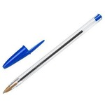

Benvenuti nel mio negozio
Breve storia delle penne
 La storia degli strumenti di scrittura può essere rintracciata fino alle antiche civiltà, dove la necessità di registrare informazioni e comunicare attraverso il linguaggio scritto ha portato alla creazione di vari strumenti. Uno dei primi strumenti di scrittura conosciuti è la penna di canna, utilizzata dagli antichi Egizi intorno al 3000 a.C. Queste penne venivano realizzate tagliando una canna in un angolo e modellandola in punta, che poteva poi essere intinta nell'inchiostro e utilizzata per scrivere su papiro. Con l'avanzare delle civiltà, anche i materiali utilizzati per creare gli strumenti di scrittura sono migliorati. Le penne d'oca, fatte dalle piume di uccelli come oche o cigni, sono diventate popolari durante il Medioevo. La penna d'oca offriva uno strumento di scrittura più resistente e flessibile, consentendo una scrittura più precisa e controllata. Le piume venivano preparate con cura rimuovendo le barbe e modellando la punta per creare una superficie di scrittura liscia. Nel XIX secolo, l'invenzione della penna stilografica ha rivoluzionato l'atto di scrivere. La penna stilografica presentava un serbatoio di inchiostro che poteva essere aspirato nella penna attraverso l'azione capillare, eliminando la necessità di intingere costantemente. Questa innovazione ha reso la scrittura più comoda ed efficiente, poiché consentiva periodi più lunghi di scrittura ininterrotta. La penna stilografica offriva anche un'esperienza di scrittura più fluida, poiché l'inchiostro fluiva in modo più costante ed uniforme sulla carta. Il XX secolo ha portato un altro significativo avanzamento negli strumenti di scrittura con l'invenzione della penna a sfera. La penna a sfera, brevettata da Laszlo Biro nel 1938, utilizzava una sfera rotante per distribuire l'inchiostro sulla carta. Questo ha permesso una scrittura più veloce e uniforme, senza la necessità di intingere la penna nell'inchiostro. La penna a sfera è diventata rapidamente popolare per la sua praticità e convenienza, ed è ancora oggi uno degli strumenti di scrittura più utilizzati al mondo. Negli ultimi decenni, la tecnologia digitale ha portato a una nuova generazione di strumenti di scrittura, come i tablet e gli smartphone. Questi dispositivi consentono di scrivere e prendere appunti in modo digitale, eliminando la necessità di carta e penna. Tuttavia, molti ancora preferiscono la sensazione e l'esperienza di scrivere a mano con una penna tradizionale. In sintesi, la storia degli strumenti di scrittura è lunga e variegata, con molte innovazioni che hanno rivoluzionato l'atto di scrivere nel corso dei secoli. Dalle penne di canna e d'oca alle penne stilografiche e a sfera, fino ai dispositivi digitali, gli strumenti di scrittura continuano a evolversi per soddisfare le esigenze e le preferenze degli utenti moderni.
La mia missione per diffondere la cultura delle penne
Penne, oh le meraviglie che contengono! Questi strumenti magici di creatività ed espressione hanno il potere di trasformare semplici pensieri in realtà tangibili. Con un movimento del polso, l'inchiostro scorre senza sforzo sulla carta, lasciando dietro di sé una scia di idee e sogni. Dai tratti eleganti di una penna stilografica alla precisione morbida di una rollerball, ogni penna possiede il suo fascino unico. Sono i compagni silenziosi di scrittori, artisti e sognatori, catturando fedelmente ogni loro capriccio e fantasia. Quindi, celebriamo questi strumenti umili ma straordinari che hanno la capacità di dare vita all'immaginazione, un tratto alla volta.